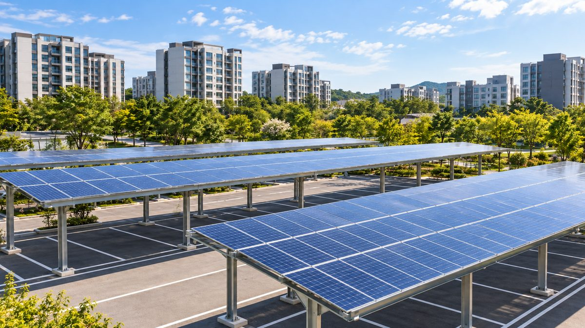

고양시, 공영주차장 41곳 태양광으로 시민참여형 햇빛연금 추진

약 8,875kW 설치 가능·연 발전수익 약 20억 원 예상…연구용역과 공공부지 발굴 조사
경기 고양특례시가 공공부지에서 시민이 참여하는 발전사업을 벌여 수익을 시민과 나누는 '고양형 햇빛연금'을 추진한다. 공영주차장 태양광 설치 의무화에 따라 대상 주차장 41곳(약 3만5,500㎡)에 약 8,875kW를 설치할 수 있고, 모두 설치하면 사업비 약 300억 원, 연 발전수익 약 20억 원, 연 발전량 약 11.6GWh가 예상된다. 시는 8월 중순부터 시민참여형 발전사업 연구용역과 공공부지 발굴 조사를 진행하고, 자유로 도로 비탈면과 체육시설, 공공 유휴부지로 대상을 넓힐 계획이다. 고양시는 2020년부터 공공시설 7곳에서 2,902kW 규모 발전설비를 운영하며 해마다 약 6억5,000만 원의 수익을 내 왔다.
시민에너지 관점
공영주차장 41곳에서 연 20억 원 수익이 예상된다는 계산은, 법으로 의무화된 설치를 어떻게 하느냐에 따라 그 수익이 민간 사업자에게 갈 수도, 시민에게 돌아올 수도 있다는 뜻이다. 공공부지 사업은 시가 직접 하는 편이 간단하다는 시각도 있지만, 시민이 출자하고 소유에 참여해야 수익이 소득을 넘어 지역 자산으로 남는다. 고양시가 이미 공공시설 7곳에서 연 6억5,000만 원을 벌어 온 만큼 경험은 쌓여 있어 보인다. 연구용역에서 시민 출자 비율과 수익 배분 원칙을 분명히 정해야 한다.
고양시는 연구용역 과업에 시민 출자 비율과 수익 배분 원칙, 시민 협동조합의 참여 방식을 분명한 검토 항목으로 넣어야 한다. 공영주차장 41곳 가운데 일부를 시범으로 시민 협동조합에 먼저 빌려주는 방안도 검토할 수 있다. 시의회는 공공시설 7곳에서 나온 연 6억5,000만 원 수익이 어디에 쓰였는지 공개를 요구해 시민 논의의 바탕으로 삼을 수 있다. 시민은 연구용역 과정에 의견을 내고 출자할 뜻을 미리 밝혀 시민참여 모델에 힘을 실을 수 있다.
출처: 문화일보 2026-08-18 김준구 원문 보기
高陽市、公営駐車場41カ所の太陽光で市民参加型の太陽光年金を推進
約8,875kWが設置可能・年間発電収益約20億ウォンを見込む…研究委託と公共用地の発掘調査
京畿道の高陽特例市が公共用地で市民が参加する発電事業を行い、収益を市民と分け合う「高陽型太陽光年金」を推進する。公営駐車場への太陽光設置の義務化に伴い、対象となる駐車場41カ所（約3万5,500㎡）に約8,875kWを設置でき、すべて設置すれば事業費約300億ウォン、年間発電収益約20億ウォン、年間発電量約11.6GWhが見込まれる。市は8月中旬から市民参加型発電事業の研究委託と公共用地の発掘調査を進め、自由路の道路法面や体育施設、公共の遊休地へと対象を広げる計画だ。高陽市は2020年から公共施設7カ所で2,902kW規模の発電設備を運営し、毎年約6億5,000万ウォンの収益を上げてきた。
市民エネルギーの視点
公営駐車場41カ所で年20億ウォンの収益が見込まれるという試算は、法で義務化された設置をどう進めるかによって、その収益が民間事業者に行くことも、市民に戻ることもあり得るという意味だ。公共用地の事業は市が直接手がける方が簡単だという見方もあるが、市民が出資して所有に加わってこそ、収益は所得を超えて地域の資産として残る。高陽市はすでに公共施設7カ所で年6億5,000万ウォンを稼いできただけに、経験は蓄積されているとみられる。研究委託では市民出資の比率と収益配分の原則を明確に定めるべきだ。
高陽市は研究委託の課題に、市民出資の比率や収益配分の原則、市民協同組合の参加方法を明確な検討項目として入れるべきだ。公営駐車場41カ所のうち一部を、モデルとして市民協同組合に先に貸し出す案も検討できる。市議会は公共施設7カ所で生まれた年6億5,000万ウォンの収益が何に使われたかの公開を求め、市民の議論の土台にすることができる。市民は研究委託の過程で意見を出し、出資の意向を前もって示して、市民参加型のモデルを後押しできる。
出典: Munhwa Ilbo 2026-08-18 Kim Jun-gu 原文を読む
高阳市以41处公营停车场太阳能推进市民参与型阳光年金
可安装约8,875kW、预计年发电收益约20亿韩元，开展研究课题和公共用地调查
京畿道高阳特例市将推进在公共用地上开展市民参与型发电项目、与市民分享收益的“高阳型阳光年金”。随着公营停车场安装太阳能被列为义务，41处对象停车场（约35,500平方米）可安装约8,875kW，若全部安装，预计项目资金约300亿韩元，年发电收益约20亿韩元，年发电量约11.6GWh。市政府从8月中旬起开展市民参与型发电项目研究课题和公共用地发掘调查，并计划将对象扩大到自由路道路边坡、体育设施和公共闲置用地。高阳市自2020年起在7处公共设施运营2,902kW发电设备，每年收益约6.5亿韩元。
市民能源视角
41处公营停车场预计年收益20亿韩元，这意味着法定义务安装的收益，取决于怎么做，既可能流向民间业者，也可能回到市民手中。也有观点认为公共用地项目由市政府直接做更简单，但只有市民出资并参与所有，收益才能超越收入、作为地方资产留存下来。高阳市已在7处公共设施每年赚取6.5亿韩元，经验似乎已有积累。研究课题应明确规定市民出资比例和收益分配原则。
高阳市应把市民出资比例、收益分配原则和市民合作社的参与方式作为明确的研究项目写入研究课题。也可以考虑把41处公营停车场中的一部分作为试点，先租给市民合作社。市议会可以要求公开7处公共设施每年6.5亿韩元收益的用途，作为市民讨论的基础。市民可以在研究过程中提出意见，并事先表明出资意向，为市民参与型模式增添力量。
来源: 文化日报 2026-08-18 Kim Jun-gu 查看原文
Goyang plans citizen-participation sunlight pension using solar on 41 public parking lots
About 8,875kW possible and about 2 billion won in annual revenue expected; research and public site survey under way
Goyang Special City in Gyeonggi Province is pursuing a "Goyang sunlight pension," in which citizens take part in power projects on public land and share the revenue. With solar now mandatory on public parking lots, about 8,875kW could be installed on the 41 lots covered (about 35,500 square meters); if all are fitted, the project would cost about 30 billion won and is expected to bring about 2 billion won a year in revenue from about 11.6GWh of annual generation. From mid-August the city is running a study on citizen-participation generation and a survey to find public sites, and plans to extend the effort to slopes along the Jayu-ro expressway, sports facilities and idle public land. Since 2020 Goyang has run 2,902kW of generation at seven public facilities, earning about 650 million won a year.
Citizen Energy View
The estimate of 2 billion won a year from 41 parking lots means that, depending on how the legally required installations are carried out, the income could go either to private developers or back to citizens. Some see it as simpler for the city to run public-land projects itself, but only when citizens invest and share ownership does the income remain as a community asset rather than just a payout. Having earned 650 million won a year from seven public facilities, Goyang appears to have the experience. The study should clearly set the share of citizen investment and the principles for distributing revenue.
Goyang should write citizen equity ratios, revenue-sharing principles and the role of citizen cooperatives into the research contract as explicit items for review. It could also consider leasing some of the 41 public parking lots to citizen cooperatives first as a pilot. The city council could ask for disclosure of how the 650 million won a year earned at the seven public facilities has been spent, as a basis for public debate. Citizens can give their views during the study and signal in advance that they are willing to invest, strengthening the case for a citizen-participation model.
Source: Munhwa Ilbo 2026-08-18 Kim Jun-gu Read the original